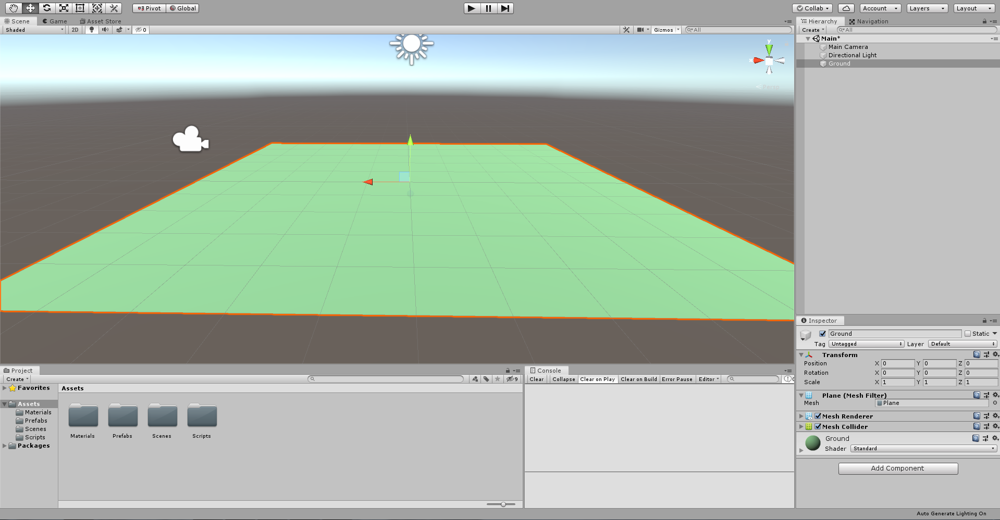
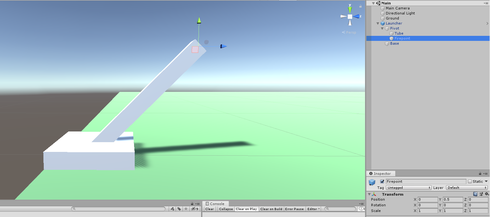
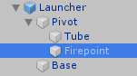

Ballistics
Introduction
In this tutorial we'll be going over how to simulate basic ballistics in Unity.
There are currently two major methods of simulating projectile ballistics in video games. The first is the conventional "physics" based method where,
in Unity, you would attach a Rigidbody component along with a Collider to a GameObject, give it a velocity, and let it go.
This method is all well and good, but at high speeds it is often not reliable and there is no guarantee that your projectile will hit what you intend it to.
But what if we want our projectiles to fly around at high speeds, like real-life bullets do? In that case you might opt for the "hitscan" method, where you shoot a ray out of the end
of your gun and see if it hits something. This method is much more reliable, but you lose the realism. Hitscans, or raycasts as you might call them, are an instant operation and don't take into account
time, bullet drop, windspeed, or any of those cool features you may want to add to make your game feel more realistic.
But what if we could combine these two approaches? What if we could take the realism from the physics-based method and combine it with the reliability and accuracy of the raycast-based method?
Well that's exactly what we're going to do in this tutorial.
Let's get started.
Setting Up The Scene
To start, I made a new 3D Unity project (using version 2019.17f1). Using a default plane, I created the "Ground" object we will place everything on top of. To make it not so bland, I gave it a nice green material. Also go ahead and make folders for Materials, Prefabs, and Scripts if you like, just to make things a little more organized.

Next, let's make the thing we're actually going to shoot out of. I made this mortar-looking thing, but it really doesn't matter what it is. What's really important is the Firepoint, which is where the projectile will be emitted from our launcher.


We will come back to this later.
Launcher
Now let's get to the code.
To start off let's make a script called Launcher, which will control when and where we shoot our projectiles.
First, we will need two public variables. One a reference to the Transform of the Firepoint object we pointed out earlier and the other
a reference to the Prefab of the projectile we will be making shortly.
using UnityEngine;public class Launcher :MonoBehaviour {public Transform firePoint;public GameObject projectilePrefab }
Next, let's fire a projectile whenever we press the spacebar.
using UnityEngine;public class Launcher :MonoBehaviour {public Transform firePoint;public GameObject projectilePrefabvoid Update () {if (Input .GetKeyDown(KeyCode .Space)) { Fire(); } } }
Now let's add the Fire function.
This function will do two things. First, it's going to instantiate a new instance of our projectile prefab (which we still need to make).
Then, it's going to access the Projectile script (also need to make) and call its own Fire function.
…void Fire () {Projectile projectile = Instantiate(projectilePrefab).GetComponent<Projectile >(); projectile.Fire(); } }
Projectile
Now onto the projectile.
Go ahead and make a new script called Projectile and let's get started.
using UnityEngine;public class Projectile :MonoBehaviour {public LayerMask layer;Vector3 currentPosition;Vector3 nextPosition;Vector3 velocity;Vector3 acceleration =Physics .gravity; }
The LayerMask will be used to determine which layers the projectile can or cannot hit. This is useful if you want certain objects to be ignored by flying projectiles.
currentPosition will, like its name suggests, store the position of the projectile in the current frame, while nextPosition will be its position in the next frame.
velocity is the velocity of the projectile and will be modified each frame by the acceleration, which we will set to Unity's default value for gravity.
Now let's finally implement the Fire method.
…void Fire (Vector3 position,Vector3 direction) { currentPosition = position; velocity = direction.normalized * speed + acceleration *Time .fixedDeltaTime; nextPosition = currentPosition + velocity *Time .fixedDeltaTime; transform.position = currentPosition; } }
Several things are going on here, so let's break it down.
First, we are assigning currentPosition to the postition parameter in the function, denoting where the projectile will be shot from. Nothing fancy here.
Second, we are initializing velocity by outlining the kinematic equation: $$ v = v_0 + at $$
Where \(v_0\) is replaced with direction.normalized * speed and \(at\) is replaced with acceleration * .
Next, we are doing the same thing with nextPosition, except now we are using the kinematic: $$ x = x_0 + v_0t + \frac{1}{2}at^2 $$
Where currentPostition is substituted for \(x_0\) and velocity * for \(v_0t\).
The \(\frac{1}{2}at^2\) part can be skipped as we are aleady accelerating the velocity vector in the previous line.
Lastly, we are setting the position of the GameObject to currentPosition.